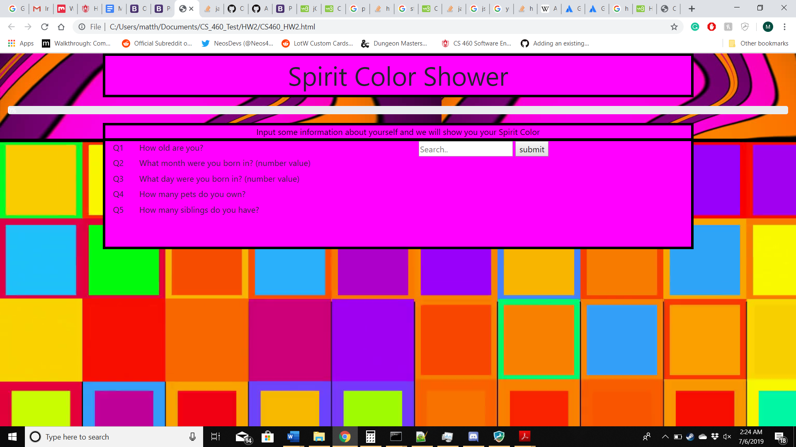
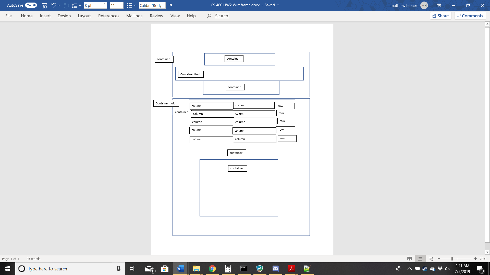

CS460 Project 2: Bootstrap Grid, JavaScript, and JQuery
This page contains information about my project 2.
This project had us using Bootstrap's row and column abilities to create the layout of the webpage.
We also had to use JavaScript and JQuery to get input from the user and display some sort of result.
For my website I did a sort of survey that takes numerical information from the user and creates a color for them based on their input.
For this I have a single homepage and a css file.
Here is the final design of the website and a link to it. HW2 Page

Initial setup
For the intial branch setup I went through the added the branch throught the github repository.
I also created a new html with the bootstrap links added and css file.
Planning and Design
This image shows my initial design for the project.
Many things did change like adding an extra column to each of the rows.
I also added a row to the the container fluid because the progress bar was not appearing in the middle of the contianer.
Using the row and making it center fixed this problem.

Coding
The first important part of the webpage is how i structured my questions
The way they are structured is important for the code I have to work
An example of a column is
The last row is different and looks like this
The code also ties into the progress bar that looks like this
Here is the code that works for the first five questions
currentQuestion keeps track of what queation the user is on, answers keep track of the users answers to questions, and barProgress is used to update the progress bar when a quesiton is answered.
All of the columns that have the question text are named question.
All of the columns that have the text field and submit button are named answer.
All of the text fields for the answer are named text.
I did this so I could use one function for all of the questions as I knew what was where, what the order was, and what question the user would be on.
First it will get the input that user typed in to the text field.
It will then check if the input is an integer, if it is the code continues otherwise an error message is shown and the user must try a different.
First it saves the answer to the current question in the correct array spot.
For the current question it sets the question text to say "Done" and makes the button and text field hidden so the user cannot answer the same quesion twice.
The button and text field for the next question become visible.
The width of the progress bar and the value update.
The final time that the code runs will instead maake the "create your color" button appear in the final row
/*keeps track of what question the user is on*/
var currentQuestion = 0;
/*holds the answers to the questions*/
var answers = [0, 0, 0, 0, 0];
/*keeps track of the current value of the progress bar*/
var barProgress = 0;
/*function used when the submit button of an answer is pressed*/
function submitQuestion(currentQuestion)
{
/*save the answer to the question*/
var test = $("[name = text]")[currentQuestion].value;
/*tests to see if the value is an integer*/
if(Number.isInteger(+test))
{
/*saves the answer into the answer array*/
answers[currentQuestion] = $("[name = text]")[currentQuestion].value;
/*makes the text field and button for the current question hidden*/
var xA = $("[name = answer]")[currentQuestion];
xA.style.visibility = 'hidden';
/*makes the questio text for the current question say "Done"*/
var xQ = $("[name = question]")[currentQuestion];
xQ.innerHTML = "Done";
/*updates the current question*/
currentQuestion = currentQuestion + 1;
/*makes the next question's text field and button visible*/
var y = $("[name = answer]")[currentQuestion];
y.style.visibility = 'visible';
/*updates the text and width of the progress bar*/
var bar = $("[name = completion]")[0];
bar.setAttribute('style','width:' + (barProgress + 20) + '%');
barProgress = barProgress + 20;
bar.innerHTML = barProgress + "%";
}
else
{
/*alerts the user if the value is not valid*/
alert('Input must be a number');
}
}
Here is the html for the boxes that appear after the last queestion is answered .
These are important for understanding the last piece of code.
This is the code that runs when the "create your color" button is pressed.
First it does all of the calculations to determine the r, g, and b values for the color.
It then makes sure that all of the values are between 0 and 255.
It then changes the background color of the color box to the calculated color.
Finally it makes the last two boxes visible.
function createColor ()
{
/*calculates the r, g, and b values based on the user's answers*/
var r = (answers[3]*10) + (answers[4]*10);
var g = (answers[1] * answers[2]) - 100;
var b = 255 - (answers[0]*2);
/*makes sure that the r, g, and b values are in the correct range*/
if (r > 255)
{
r = 255;
}
if (g > 255)
{
g = 255;
}
if (b > 255)
{
b = 255;
}
if (r < 0)
{
r = 0;
}
if (g < 0)
{
g = 0;
}
if (b < 0)
{
b = 0;
}
/*sets the background color of the final box to be the calculated color*/
var box = $("[name = coloredBox]")[0];
box.style.backgroundColor = 'rgb(' + r + ',' + g + ',' + b + ')';
/*makes the final box visible*/
var x = $("[name = final]")[0];
x.style.visibility = 'visible';
}
Notes